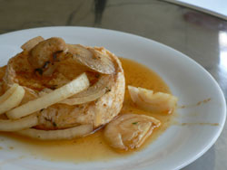
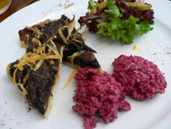
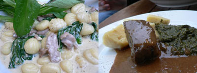
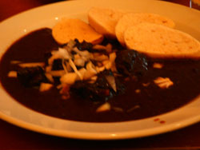
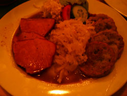

Prague
I ate better in Prague than I have in any other European city. Czech cuisine is heavy and flavorful, and it’s perfect for rainy days spent walking around an old, hilly town. As we were about to arrive on the train from Berlin, I turned to Nathan and alerted him to the fact that this would be the first place we visited where we didn’t speak one word of the language, and also that we had no idea what the exchange rate was between Czech crowns and dollars (it turned out to be around 22 crowns per dollar).
Eating and drinking in Prague is not as cheap as people like to say it is, but it is the cheapest place I’ve ever been. Having heard this so much in the last several years, I had low expectations for the city; I expected a dangerous place full of beggars and drug dealers, much like Naples, Italy. I still can’t believe we didn’t see a single beggar the whole time. Even away from the tourist spots, Prague is safe. My Czech friend, Michael, who let us stay on his couch, explained that the Czech Republic has one of the world’s biggest middle classes as a result of the Communist regime.
It’s also relatively easy to eat out there, as most menus are translated into English and most people speak it quite well. This always makes me feel bad as a tourist, when I have to force someone in their own country to speak my stupid language, but I did use the few words I knew as often as possible, saying “please,” “thank you,” and “two beers” whenever appropriate. Michael said that Czech is one of the hardest languages to learn, and I for one can’t even make all of the sounds. For example, when there is an inverted carrot (ř) on top of a letter, it means you have to soften the pronunciation. How do you soften, say, an r? You have to roll it, first of all, almost like in Spanish, but as you roll it you have to make a “zh” sound as well. Try it—it’s impossible.
Beer is serious business in this country. Draught beer gets its own area at the bar, giving the beer pourer plenty of room to maneuver. It is cheaper than soda, and everyone is drinking it by the half liter (which generally costs 25 or 30 crowns, a little over a dollar). I had a good laugh thinking about the $8 bottle of Corona I had a few days before we left New York at some steakhouse on 9th Avenue. Ah, New York.

The first thing we ate, nakládaný hermelín (45 crowns), turned out to be a regional specialty. This was at Café Indigo (Platnéřska 11, Praha 1). It’s a small round of Camembert marinated in oil with a spice we believe was paprika. Michael said it’s a common bar food served all over Prague. Camembert is one of my least favorite cheeses, but this was good, and I’d like to figure out how to prepare it before our next party.
We walked all over the old town before finally choosing Kolkovna for dinner (V kolkovně 8, Praha 1). This was part of a group of restaurants owned by the same people. Michael wasn’t with us, but it seemed to be full of Czech people eating Czech food, and later on he said it’s a good place to which he might have brought us anyway, and that’s always music to the ears of lost tourists.
First we ate this tasty mushroom pie with beets.

Then for main courses I had Slovak gnocchi, and Nathan had a beef hunk.

The gnocchi were adorned with spinach and smoked meat, and they were very substantial and distinctly non-Italian in flavor. Nathan’s beef hunk was larded with bacon, and he devoured it. Our entire meal, with a half liter of beer each, was about $20.
For lunch the next day, we ate goulash at a Czech place near the castle. I don’t know the place’s name, but the goulash was good and only a few bucks.

There was a man next to us at a business lunch, and I got to watch him extract every bit of meat from a pork knuckle that I first thought was a whole roast chicken. It was really a sight. The Czechs don’t mess around with dainty small plates for lunch.
After walking around touristland all day, we met Michael at his office and, after drinking a few glasses of beer in a café, we went to a restaurant and brewery called Bránický Sklípek, which had no English menu. It’s always exciting to go somewhere that’s mostly inaccessible to tourists, and it was nice to relax and let Michael do all the talking and make all the decisions.
For me, he chose kaplická bašta (at least I think he did—please alert me if this means roasted piglet or something), which were absolutely delicious potato pancakes served with sauerkraut and ham.

He had a big piece of fried cheese, and Nathan had beef in cream sauce. Our food and three huge glasses of beer cost us just 300 crowns, about $15. Prague is really worth visiting if you find yourself close to central Europe.
Comments
How was the beer?
I am vicariously traveling with you! I love it!!
We drank mostly Pilsner Urquell, which I didn’t know was Czech and which I liked very much.
Hello,
I just stubmled upon your article while researching food and entertainment ideas for my trip to Prague in October. You make the food and beer sounds quite delicious. I was curious as to what three things (eat, drink, or tour) you would absolutely recommend. The things you couldn’t pass up if you had a chance to visit again.
Thank you,
Therese
super dooper lami inyong foooooooddddddd
Add a comment